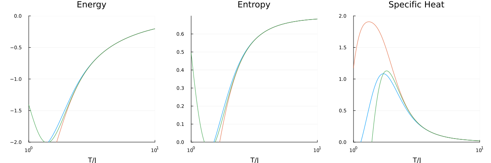

Square Lattice
This example computes the linked cluster expansion on a square lattice up to order 3.
Setup
Define the unit cell with basis positions, primitive vectors, and nearest-neighbour bonds:
using Lincege
square_basis = [[0.0, 0.0]]
square_pvecs = [[1.0, 0.0], [0.0, 1.0]]
square_bonds = [Bond(1, 1, [1, 0], 1), Bond(1, 1, [0, 1], 1)]
square_uc = UnitCell(square_basis, square_pvecs, square_bonds, [1])UnitCell([0.0; 0.0;;], [1.0 0.0; 0.0 1.0], [1], Bond[Bond(1, 1, [1, 0], 1), Bond(1, 1, [0, 1], 1)])Building the lattice and clusters
m_order = 3
lattice = SiteExpansionLattice(m_order, square_uc)
trans_clusters = TranslationClusterSet(lattice)
clusters_from_lattice!(trans_clusters, lattice)
iso_clusters = IsomorphicClusterSet(lattice)
clusters_from_clusters!(iso_clusters, trans_clusters)
sym_clusters = SymmetricClusterSet(lattice, :Square)
clusters_from_clusters!(sym_clusters, trans_clusters)ClusterSet{SymmetricHasher} with 4 clustersComputing the expansion
expansion = Expansion(iso_clusters, lattice)
summation!(expansion, m_order)Expansion(Dict{UInt64, Lincege.ExpansionCluster}(0xea8447a37b9b22d0 => Lincege.ExpansionCluster(Vertices: [18, 25], 2.0, UInt64[0x0ef7ab2229d359da, 0x0ef7ab2229d359da], Dict{UInt64, Float64}(0xea8447a37b9b22d0 => 1.0, 0x0ef7ab2229d359da => -2.0)), 0x0ef7ab2229d359da => Lincege.ExpansionCluster(Vertices: [25], 1.0, UInt64[], Dict{UInt64, Float64}(0x0ef7ab2229d359da => 1.0)), 0xa363884a2e20cf53 => Lincege.ExpansionCluster(Vertices: [17, 18, 25], 6.0, UInt64[0x0ef7ab2229d359da, 0xea8447a37b9b22d0, 0xea8447a37b9b22d0, 0x0ef7ab2229d359da, 0x0ef7ab2229d359da], Dict{UInt64, Float64}(0xea8447a37b9b22d0 => -2.0, 0x0ef7ab2229d359da => 1.0, 0xa363884a2e20cf53 => 1.0))), Vector{UInt64}[[0x0ef7ab2229d359da], [0xea8447a37b9b22d0], [0xa363884a2e20cf53]], 0)Printing Tables
There are three ways to print the standard tables one sees in papers regarding NLCE.
print_latex_table outputs LaTeX source ready to paste into a paper:
print_latex_table(expansion, [trans_clusters, iso_clusters, sym_clusters], m_order)\begin{tabular}{|r|r|r|r|r|r|r|}
\hline
\textbf{Order} & \textbf{No. of connected clusters} & \textbf{No. of isomorphic clusters} & \textbf{No. of symmetric clusters} & \textbf{$\sum L(c)$} & \textbf{$\sum |\text{subgraphs}|$} & \textbf{$\sum \F{c}$} \\
\hline
1 & 1 & 1 & 1 & 1.0 & 0 & 1.0 \\
2 & 2 & 1 & 1 & 2.0 & 2 & -2.0 \\
3 & 6 & 1 & 2 & 6.0 & 5 & 0.0 \\
\hline
\end{tabular}print_html_table renders the table in the browser:
using Markdown
io = IOBuffer()
Lincege.print_html_table(io, expansion, [trans_clusters, iso_clusters, sym_clusters], m_order)
Markdown.HTML(String(take!(io)))| Order | No. of connected clusters | No. of isomorphic clusters | No. of symmetric clusters | ∑ L(c) | ∑ |subgraphs| | ∑ F(c) |
|---|---|---|---|---|---|---|
| 1 | 1 | 1 | 1 | 1.0 | 0 | 1.0 |
| 2 | 2 | 1 | 1 | 2.0 | 2 | -2.0 |
| 3 | 6 | 1 | 2 | 6.0 | 5 | 0.0 |
print_ascii_table prints a plain-text table:
print_ascii_table(expansion, [trans_clusters, iso_clusters, sym_clusters], m_order)┌───────┬───────────────────────────┬────────────────────────────┬──────────────
│ Order │ No. of connected clusters │ No. of isomorphic clusters │ No. of symm ⋯
├───────┼───────────────────────────┼────────────────────────────┼──────────────
│ 1 │ 1 │ 1 │ ⋯
│ 2 │ 2 │ 1 │ ⋯
│ 3 │ 6 │ 1 │ ⋯
└───────┴───────────────────────────┴────────────────────────────┴──────────────
4 columns omittedWriting to JSON
write_to_json(expansion, lattice, iso_clusters, "square_lattice.json")Ising Model Simulation
temperatures = collect(range(0.5, 5.0, length=200))
clusters = import_from_json("square_lattice.json")
solvers = [IsingSolver(c) for c in clusters]
nlce_result = perform_nlce(solvers, temperatures)Plotting Results
using Plots
T = nlce_result.temperatures
n_orders = length(nlce_result.energy)
energy_cumsum = hcat([sum(nlce_result.energy[1:n]) for n in 1:n_orders]...)
entropy_cumsum = hcat([sum(nlce_result.entropy[1:n]) for n in 1:n_orders]...)
cv_cumsum = hcat([sum(nlce_result.specific_heat[1:n]) for n in 1:n_orders]...)
plot_range = max(1, n_orders - 2):n_orders
labels = reshape(["Order $n" for n in plot_range], 1, :)
p1 = plot(T, energy_cumsum[:, plot_range]; label=false, xlabel="T/J", title="Energy")
p2 = plot(T, entropy_cumsum[:, plot_range]; label=labels, xlabel="T/J", title="Entropy", legend=:top)
p3 = plot(T, cv_cumsum[:, plot_range]; label=false, xlabel="T/J", title="Specific Heat")
plot(p1, p2, p3; layout=(1, 3), size=(900, 300))The following plot shows convergence of the NLCE up to order 10 for the square lattice Ising model (J=1), note that the results plotted here are not directly evaluted from the code above, but rather a cached result from a different calculation:
